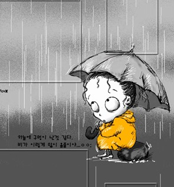
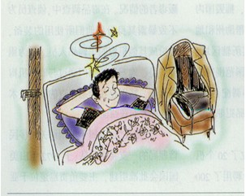

下暴雨应如何避险
夏季来临，全国各个地区天气变化无常。新闻里每天总有那么一两个地方暴雨，也发生了不少的事故。下面教大家几招避险攻略。

步骤/方法
1.出门前，要先了解下天气预报。特别是夏季，雷阵雨说来就来的。最好包包里要时刻备着一把 伞或者雨衣。以防万一。
2.若在途中遇到暴雨，一定要找一个地方躲雨，亭子或者商店等等。千万不要躲在树下，很危险。若打伞，伞头的方向必须跟风的方向相反。如果顺着的话，不单单挡不了雨，那伞也很容易报废的。
3.若在旅游途中遇到暴雨，那就立马找一家最近的旅馆先安定下来。千万不要冒雨前行。特别的
驾车的。最好停至一个安全的地方，再躲雨。
4.若在家中遇到暴雨，要关好门窗，关闭电源。如果没有什么特殊的事就不要出门，好好待在家里，安心度过暴雨时期。暴雨一般时间很短。所以正好趁这些时间睡一觉也好。

5.若是在学校或是学校的老师在下暴雨时，应让孩子安心呆在教室，不要随意走动。哪怕是放学期间，也要让孩子呆在教室，直到家长送雨具过来带回家。
转载自jackalhcw。
|